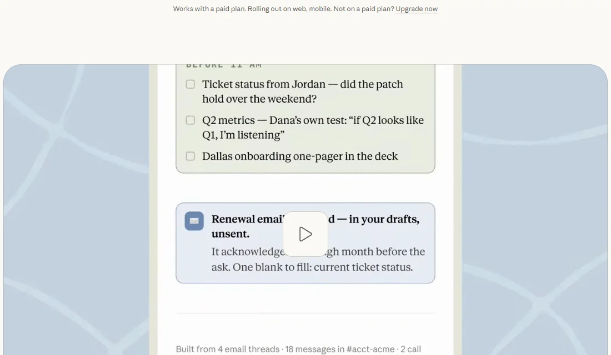
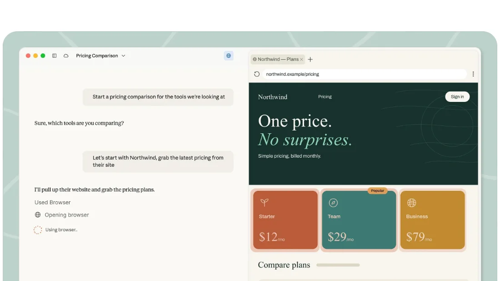
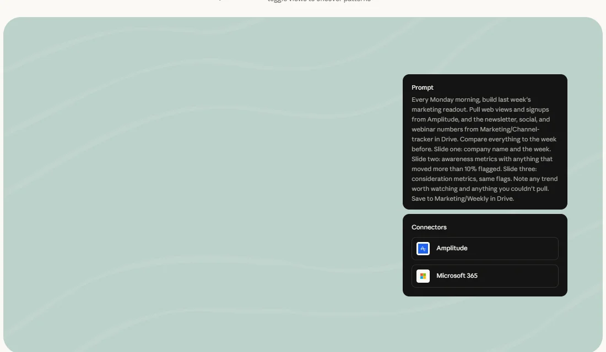

Claude CoworkAnthropic
把 Claude Code 的 Agent 能力搬进桌面应用、交给非程序员：直接在你的文件夹和工具里干活，交出带公式的表格和成套的演示；微软的 Copilot Cowork 也基于它的技术构建。
一页结论
- 和 Claude Code 同一套架构：Cowork 用的是驱动 Claude Code 的 Agent 架构，只是放进了桌面应用，不用打开终端S2
- 办公成品是核心卖点：直接读写本地文件，产出带有可用公式的 Excel、PowerPoint 演示和排好版的文档；子 Agent 并行处理大任务S2
- 从独立入口变成 Claude 的一部分：9 月起 Cowork 与对话合为“一个 Claude”，需要处理文件时自动启用；企业版 11 月 16 日起默认开启，任务在 Anthropic 托管的隔离云沙箱中运行S1S7S12
- 被微软采用：3 月微软发布的 Microsoft 365 Copilot Cowork 基于 Claude Cowork 的技术构建，Claude 也进入了完整的 Copilot ChatS8
- Agent 办公已成为品类：竞品发布时直接以“编程与 Cowork”为对标；社区也出现了开源的本地替代品S12
01公司介绍
02公司战略
Anthropic 用 Claude Code 赢下开发者之后，用 Cowork 把同一套能力推给企业里的所有知识工作者。
- 能力复用：Cowork 与 Claude Code 共用 Agent 架构，连接器、Skills、插件在两边通用S2
- 从“选模式”到“不用选”：对话与 Cowork 合并，用户只管提需求，需要动文件时自动切换S1S7
- 借道微软进入大企业：Microsoft 365 Copilot Cowork 基于其技术构建；2025-11 Anthropic 与 Azure 签下 300 亿美元算力协议S8
- 行业化：提供开源的金融服务插件集，覆盖财务建模、股票研究等流程S4
03产品定位
| 项目 | 内容 |
|---|---|
| 一句话定位 | “你最好的工作背后的那份工作”：给一个目标，它在你的文件和工具里完成任务，交回成品供你审阅S1 |
| 目标用户 | 非开发者的知识工作者；需要付费计划（Pro、Max、Ultra、Team、Enterprise）S1 |
| 核心场景 | 定期报告、搭建表格、批量审阅、整理笔记与调研S1 |
| 与 Claude Code 的分工 | 同一架构：Claude Code 面向开发者与终端，Cowork 面向桌面里的文件与办公S2 |

04产品与主要功能
Cowork 的特点是“桌面优先、文件优先”：在用户自己的电脑上读写文件，需要上网时用内置浏览器，关上电脑后任务可以继续或按计划运行。
产品架构
交互入口
Claude 桌面端（Windows / macOS / Linux）网页与手机（逐步开放）Dispatch：从手机给电脑派活
Agent 层
Claude Code 同款 Agent 架构子 Agent 并行定时任务Projects：按项目组织文件夹、说明与上下文
扩展层
连接器（MCP）Skills插件与插件市场金融服务等行业插件
模型层
Claude 模型（Fable、Opus、Sonnet 等）
运行环境
安全与管控角色权限分组消费上限用量分析OpenTelemetry 监控HIPAA 配置的本地模式
核心功能


截图来自 Claude Cowork 官网，2026-11-02。
12 项能力评估
代码审查无或未说明非主场景
05商业模式
Cowork 不单独收费，包含在 Claude 付费订阅中，和 Claude Code 共用订阅体系。
| 计划 | 价格 | Cowork |
|---|---|---|
| Free | $0 | 不可用，需要付费计划S1 |
| Pro | $20/月（年付 $17/月） | 可用，含内置浏览器S13S1 |
| Max | $100/月 | 可用，用量为 Pro 的 5 倍S13 |
| Ultra | $200/月 | 可用，用量为 Pro 的 10 倍S13 |
| Team | 标准席 $25/人/月起 | 可用S13S1 |
| Enterprise | $20/人/月（年付）+ 按 API 价计量 | 管理员在组织设置中管理；统一体验 11-16 起默认开启S13S7 |
收入逻辑：Cowork 本身不产生单独收入，作用是让更多岗位用上 Claude，从而提高企业席位数和用量；招股书显示同时采购平台与自家应用的大客户比例一年内从约 30% 升到过半S11。另一条收入路径来自微软：Copilot Cowork 基于其技术构建（分析意见，合作的商业条款未公开）。
06上下游与渠道
上游：模型
Anthropic 自研 Claude 模型
Claude Cowork
Claude 桌面端、网页、手机
渠道
07市场表现
08用户口碑
以下来自 Hacker News 的讨论（C 级来源，只反映社区情绪，不作为事实依据）。
09安全合规
10近期动态
11潜在风险分析意见
| 风险 | 表现 | 可能程度 |
|---|---|---|
| 合作伙伴变对手 | 微软基于其技术推出 Copilot Cowork，并在 Microsoft 365 内直接分发，可能分流企业客户S8 | 中 |
| 本地执行的安全 | Agent 直接读写本地文件、接管屏幕，误操作或被诱导的风险需要严格的权限设计S2 | 中 |
| 数据上云顾虑 | 统一体验把任务放进云沙箱运行，对数据敏感的企业可能更倾向本地方案S7S12 | 中 |
| 单一模型绑定 | 只用 Claude 模型S2 | 低 |
| 政府市场 | Anthropic 与美国国防部的争议影响公共部门采购S10 | 中 |
“可能程度”为基于现有公开信息的判断，不是量化预测。
12综合结论分析意见
优势
- 与 Claude Code 共享成熟的 Agent 架构
- 本地文件与成品交付体验完整
- 企业管控与行业合规（HIPAA）齐全
劣势
- 桌面为主，网页与手机仍在铺开
- 单独的使用数据不透明
机会
- 借助微软生态触达更多企业
- 行业插件（金融等）带来专业场景
威胁
- 微软 Copilot Cowork、ChatGPT Work 的直接竞争
- 企业对 Agent 安全与数据的顾虑
对 AI 产品团队的启示
- 先在开发者身上验证，再推给所有人：Cowork 复用了 Claude Code 已被验证的 Agent 架构。复杂能力可以先在专业用户中打磨，再降低门槛推向大众。
- 让用户不用选模式：从独立的 Cowork 到“一个 Claude”，说明最好的 Agent 体验是用户只说需求、系统自己决定用什么能力。
- 技术授权也是一种分发：被微软采用的技术，可以借合作方的渠道触达自己够不着的客户，但要提防合作方变对手。
- 本地优先是差异化卖点：直接在用户的文件夹里干活，降低了“上传、下载、复制粘贴”的摩擦，也更容易打消数据顾虑。
信息缺口
以下信息未找到可靠的公开来源，本报告不做推测。
- Cowork 的用户数、付费用户数与收入（招股书未单独披露）
- Anthropic 与微软在 Copilot Cowork 上的商业条款
- 网页与手机端全面开放的时间
- 研究预览与正式发布的官方原始公告（日期取自二手汇总）
来源
A 官方 · B 权威媒体或第三方 · C 社区（仅用于口碑与线索）。访问日期均为 2026-11-02。
- S1 · AClaude Cowork 产品页Anthropic
- S2 · ACowork OverviewClaude 文档
- S3 · AClaude Desktop 更新日志Claude 文档 · 截至 2026-10-29
- S4 · AInstall financial services plugins for CoworkClaude 文档
- S5 · AConnectors directory / PluginsClaude 文档
- S6 · ASet up Cowork (local mode) for a HIPAA-ready organization / DispatchClaude 文档
- S7 · BAnthropic Merges Claude Chat and Cowork for Enterprise UsersPYMNTS · 2026-10-25
- S8 · BMicrosoft unveils Copilot Cowork agents built on Anthropic's AI and E7 AI product suiteFortune · 2026-03-09
- S9 · BEverything Anthropic Shipped in 2026（汇总）Linas Beliūnas（Substack） · 2026
- S10 · BAnthropic（汇总招股书与媒体报道）Wikipedia
- S11 · BAnthropic's IPO filing reveals its strategy for keeping enterprise customers hookedTechCrunch · 2026-10-26
- S12 · CHacker News 讨论：Cowork 与对话合并 / 开源替代 / 竞品对标Hacker News · 2026-08 至 2026-10
- S13 · AClaude 定价Anthropic
- S14 · ASecurity（Anthropic 信任中心说明）Claude Code 文档